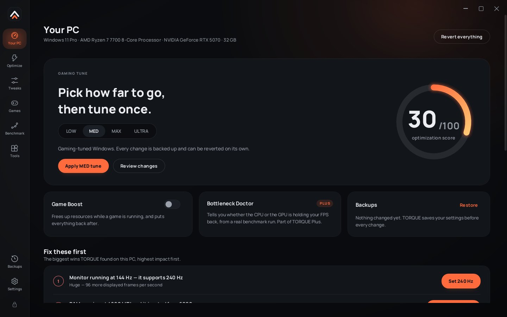

Tune Windows for gaming.
Undo anything, any time.
TORQUE applies documented Windows, NVIDIA and in-game settings in one guided step. You see every change before it happens, every original value is backed up, and one switch puts your PC back to stock.

Measure, preview, apply.
TORQUE is built so you always know what is about to change, and can always go back.
Measure
Health check finds the big wins first: refresh rate, RAM speed, the wrong display port. Benchmark records real frame times with Intel PresentMon.
Preview
Pick a level. Every setting is listed with its current and new value before anything is touched, and you can untick any of them.
Apply and verify
A restore point and a backup of every original value come first. Benchmark again and keep what helps. Revert the rest with one click.
Choose how far to go.
Each level builds on the one before. LOW and MED suit every PC. MAX is for dedicated gaming rigs. ULTRA is part of Plus.
Max refresh rate, NVIDIA low-latency profile, Game Mode, no forced restarts mid-game.
Adds USB, PCIe and CPU latency power settings, curated debloat, startup clean-up and tuned game configs.
Adds Windows' Low Latency Profile, the fastest DNS, service grouping, competitive game configs and Game Boost.
Adds the 19-tweak Plus pack: timer resolution, MSI interrupts, core parking, network and memory tuning.
Everything that actually moves frame times.
Per-game configs
Fortnite, VALORANT, CS2, Apex, Rocket League, Marvel Rivals and Minecraft, written into each game's own settings file.
NVIDIA driver profiles
Low Latency Mode, V-Sync, shader cache and power management per game, through the official driver API.
Game Boost
While a game runs: performance power plan, high priority, muted notifications and approved apps paused. All restored when you quit.
Benchmark Lab
Average FPS, 1% and 0.1% lows and stutter from real frame times, with a saved before-and-after comparison.
Health check
Catches the settings that cost the most FPS, like a 240 Hz monitor running at 144 Hz or RAM below its rated speed.
Crosshair overlay
New in 2.7. A click-through crosshair for borderless games. Nothing is injected into the game.
Nothing hidden, nothing permanent.
TORQUE never disables Defender, SmartScreen, UAC, Windows Update or CPU security mitigations, never forces HPET, and never sets services to Disabled. Every change has a one-click revert, and Revert, backups and Health check are free forever.
Ready when you are.
Free download, no account. Join the Discord for help, results and Plus.